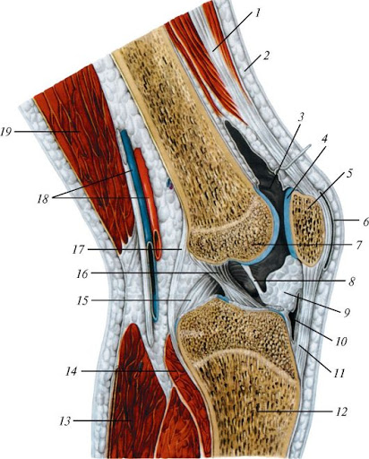

Темы / Суставы / Коленный сустав
Тема: Коленный сустав (art. genus)

Анатомия. Классификация сустава
1. По количеству суставных поверхностей, находящихся в одной капсуле сустава: простой
2. В капсуле находятся суставные поверхности медиального и латерального мыщелков (condylus medialis et lateralis) бедренной кости (os femur) и большеберцовой (os tibia). Капсула прикрепляется на бедренной кости чуть выше суставных поверхностей; на большеберцовой кости по краям суставных поверхностей (однако ряд авторов считает коленный сустав сложным, включая суставную поверхность надколенника (patella))
3. По форме суставных поверхностей: мыщелковый.
4. По принципу дополнительного включения: комплексный, в суставной полости имеются медиальный и латеральный мениски (meniscus medialis et lateralis).
5. По одномоментной суставной функции: некомбинированный.
6. По количеству осей вращения: двухосный. Во фронтальной оси возможно сгибание (flexio) и разгибание (extensio); по вертикальной оси возможно вращение (circumduxio) (при сгибании голени).
7. Вспомогательный аппарат сустава:
Сустав фиксируется внекапсулярными связками
а) малоберцовая коллатеральная связка (lig. collaterale fibulare) – начинается от латерального надмыщелка бедренной кости, заканчивается на латеральной поверхности малоберцовой кости (os fibula).
б) косая подколенная связка (lig. popliteum obliquum) – вплетается в заднюю стенку суставной сумки, прикрепляется к задней поверхности медиального мыщелка большеберцовой кости.
в) дугообразная подколенная связка (lig. popliteum arcuatum) – перекидывается с малоберцовой кости на большеберцовую (похоже на кольцевую связку лучевой кости).
Капсулярные связки
Большеберцовая коллатеральная связка (lig. collaterale tibiale) – располагается между медиальными мыщелками.
Интракапсулярные связки
а) передняя крестообразная связка (lig. cruciatum anterius) – начинается на латеральном мыщелке и переднем межмыщелковом поле.
б) задняя крестообразная связка (lig. cruciatum posterius) – начинается на медиальном мыщелке и заднем межмыщелковом поле.
в) поперечная связка колена (lig. transversum genus) – соединяет передние концы менисков.
Удерживатели надколенника
Медиальный и латеральный удерживатели надколенника (retinaculum patellae medialis et lateralis).
Вспомогательные элементы сустава:
А) складки, содержащие жировую ткань (plicae adiposae) – крыловидные складки (plicae alares) – по бокам от надколенника и поднадколенниковая синовиальная складка (plica synovialis infrapatellaris)
Б) синовиальные сумки:
1) наднадколенниковая сумка;
2) глубокая поднадколенниковая сумка;
3) подкожная преднадколенниковая сумка;
4) подсухожильная сумка портняжной мышцы;
5) подколенное углубление.
Биомеханика коленного сустава
Вокруг фронтальной оси происходят сгибание и разгибание. При сгибании возможно вращение относительно вертикальной оси. Крестообразные связки тормозят пронацию, при выполнении супинации они расслабляются. Супинация тормозится в основном натяжением коллатеральных связок. Сгибание ограничиваются натяжением крестообразных связок и сухожилием четырехглавой мышцы бедра
В сгибании принимают участие мышцы задней группы бедра. В разгибании – мышцы передней группы.
Вращение наружу (супинацию) (supinatio) осуществляют икроножная мышца (латеральная головка) (m. gastrochemius) и двуглавая мышца бедра (m. biceps femoris).
Вращение внутрь (пронацию) (pronatio) осуществляют мышцы медиальной группы бедра и медиальная головка икроножной мышцы.
Кровоснабжение
Артериальное кровоснабжение осуществляется из бассейна бедренной артерии (a. femoralis), а именно ветвями подколенной (a. poplitea), передней и задней большеберцовой артерий (a. tibialis anterior et posterior).
a. genus inferior medialis отходит от a. poplitea.
a. genus media отходит от a. poplitea.
a. recurrens tibialis anterior отходит от a. tibialis anterior.
a. recurrens tibialis posterior отходит от a. tibialis anterior.
a. circumflexa fibulae отходит от a. tibialis anterior posterior.
Ветви артерий, приведенных выше, образуют артериальную сеть, оплетающую капсулу коленного сустава.
Отток венозной крови – по одноимённым венам.
Иннервация
Осуществляется соматическими ветвями из крестцового сплетения, а именно ветвями седалищного нерва (n. ischiadicus) – большеберцовым и общим икроножным нервами (nn. tibialis et peroneus communis).
Рентгеноанатомия коленного сустава
На рентгенограмме коленного сустава четко видны суставные поверхности костей. Надколенник наслаивается на дистальный эпифиз бедренной кости. Рентгеновская суставная щель широкая, изогнутая в средней своей части.
Иллюстрации
Надколенниковая поверхность
Задняя крестообразная связка
Передняя крестообразная связка
Поперечная связка колена
Медиальный мениск
Большеберцовая коллатерльная связка
Сухожилие надколенника
Надколенник
Сухожилие четырехглавой мышцы бедра
Межкостная перепонка
Малоберцовая кость
Малоберцово-большеберцовая связка
Сухожилие двуглавой мышцы бедра
Латеральный мениск
Малоберцовая коллатеральная связка
Рис. 1. Коленный сустав, правый, вид спереди (суставная капсула удалена, сухожилие четырехглавой мышцы бедра с надколенником оттянуто вниз)

Сухожилие четырехглавой мышцы бедра
Кожа
Поднадколенниковая сумка
Суставная поверхность надколенника
Надколенник
Подкожная преднадколенниковая сумка
Медиальный мыщелок бедренной кости
Поднадколенниковая синовиальная складка
Крыловидные складки
Глубокая поднадколенниковая сумка
Связка надколенника
Большеберцовая кость
Икроножная мышца (латеральная головка)
Подколенная мышца
Задняя крестообразная связка
Передняя крестообразная связка
Суставная капсула
Подколенные сосуды
Двуглавая мышца бедра
Рис. 2. Синовиальные сумки и связки коленного сустава. Сагиттальный распил
Рис. 3. МРТ Коленного сустава
Рис. 4. Рентгеноанатомия коленного сустава